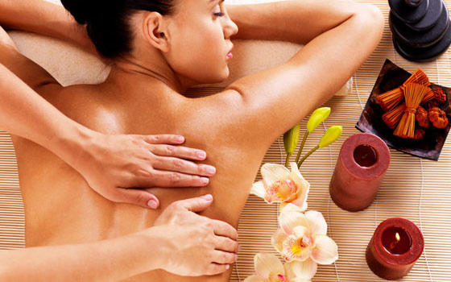

MASAJES
El masaje es un tratamiento que tiene miles de años. Si necesitas o te apetece un masaje, puedes elegir entre 80 tipos de masajes con una amplia variedad de presiones, movimientos y técnicas. Aunque no los encontrarás todos en la misma clínica estética. Un masaje implica presionar o manipular los músculos y otros tejidos blandos con las manos y los dedos. A veces, incluso con los antebrazos, codos o pies.
